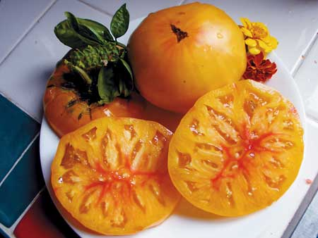

Explore the wonderful world of great-tasting heirloom tomatoes by purchasing tomato seedlings from a mail-order company. You can choose from hundreds of varieties ? usually grown organically ? and have them shipped directly to your garden gate.
Trying plants from unusual, open-pollinated (nonhybrid) varieties is an excellent way to decide if you like them enough to start saving seeds, which is the first step toward cultivating varieties that are well-suited to your garden. Companies that specialize in heirloom tomato seeds generally choose their most dependable varieties to sell as transplants. Some suppliers continue to grow and ship plants through June and July, when seedlings are long gone from retail store shelves, but be sure to place orders for late plantings in advance so they can be seeded and shipped at just the right time. Instead of buying half a dozen seed packets to try six varieties, for example, you might simply order one of the seedling collections offered by a mail-order company.
Plant prices vary, as do shipping costs, but expect to pay between $25 and $35 for a half-dozen plants, including shipping. If the prices seems high to you, remember that over the season each plant will produce many pounds of high-quality, super delicious, vine-ripened tomatoes for fresh eating, canning, freezing or drying.
After your plants arrive, it's best to get them in their beds right away. You can transport tomato plants, tower cages and plant protectors to and from your garden with a heavy-duty garden cart. Real do-it-yourselfers can build their own cart using the easy-to-follow cart plans available below.
Mail-order Tomato Sources:
W. Atlee Burpee & Co.
Warminster, PA
The Herb Cottage
Hallettsville, TX
Hirt's Gardens
Medina, OH
Laurel's Heirloom Tomato Plants
Lomita, CA
The Tasteful Garden
Heflin, AL
Territorial Seed Co.
Cottage Grove, OR
Please share your comments with us and the other readers on the mail-order seed companies you've used.
|
 MARIANNAS HEIRLOOM SEEDS Mail-order companies offer unique tomato varieties, such as 'Marvel Striped.' |
|
|